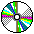

EROS Kernel Internals
Before you go on...
 The kernel
internals document is a work that is actively in progress. As we
modify the design of various parts of the system, this document will
be updated to reflect the current design. In order to reduce the
amount of rereading you need to do when the document changes, we've
tried to identify each section with one of the following icons:
The kernel
internals document is a work that is actively in progress. As we
modify the design of various parts of the system, this document will
be updated to reflect the current design. In order to reduce the
amount of rereading you need to do when the document changes, we've
tried to identify each section with one of the following icons:
| Marking | Meaning |
|---|---|
|  | This portion of a document is frozen (documents on CD-ROM cannot be altered). |
| This portion of a document is stable. | |

|
This portion of the document is still under construction. Such sections represent information whose general direction we think is sound, but which may require reworking as we do the implementation. |
| This portion of the document reflects tentative new content, and should be viewed as ideas we are not committed to. Placing them in the document provides a way to capture the design process and to solicit your feedback. |
If you find more appropriate icons, please don't hesitate to let us know!
Contents
Copyright 1998 by Jonathan Shapiro. All rights reserved. For terms of redistribution, see the GNU General Public License